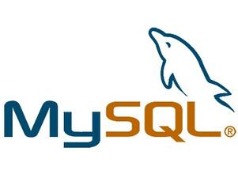
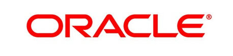
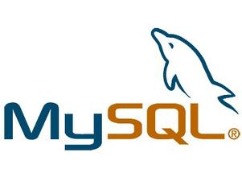
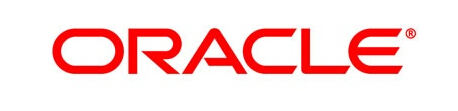

Standard Chartered
Software Engineer, 2014 - Present
Financial Markets Solutions Delivery (FMSD) is a global unit that builds, implements and supports IT solutions to enable the Financial Markets business of Standard Chartered Bank. To perform analysis and development as part of the Group Market Risk team (GMR). GMR is in charge of the definition of methodologies for portfolio market risk metrics, in particular Value at Risk (VaR) and Expected Shortfall (ES), supervision of the market risk platform and compliance with regulatory requirements .


 


